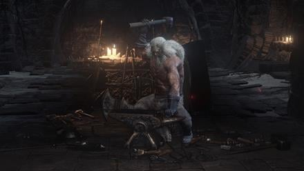

NPCs
Andre, el herrero
Andre el Herrero es un PNJ de Dark Souls 3 que se encuentra en el Santuario de Enlace de Fuego. Al interactuar con él, el jugador puede mejorar, infundir y reparar armas, escudos y bastones. Las esquirlas de estus repartidas por Lothric pueden entregarse a André para aumentar la carga total de estus del jugador (hasta un total de quince). Además, André permite al jugador ajustar la cantidad de cargas concedidas a los frascos de Estus y Estus ceniciento.m.
Guardiana del Fuego

La Guardiana del Fuego es un PNJ de Dark Souls 3 que se encuentra en el Santuario de Enlace del Fuego. Cuida de la hoguera y ayuda al personaje del jugador en su largo y arduo viaje por Lothric. Al interactuar con ella, el jugador puede gastar almas para subir de nivel y, más tarde, curar el Sello Oscuro usando el Alma del Guardián del Fuego.
Criada del Santuario

La Sierva del Santuario es un PNJ de Dark Souls 3 que se encuentra en el Santuario de Enlace de Fuego. Es la principal mercader a disposición del jugador, y su inventario de objetos disponibles para la compra se puede ampliar dándole Ceniza Umbral repartida por Lothric.
Irina de Carim

Irina de Carim es un PNJ de Dark Souls 3. Puede enseñar y vender milagros a tu personaje en ciertas zonas del juego.
Cornyx del Gran Pantano

Cornyx del Gran Pantano es un PNJ de Dark Souls 3. Cornyx enseña piromancia, actúa como mercader y mejora la Llama piromántica.
Yuria de Londor

Yuria de Londor es un PNJ en Dark Souls 3. Un personaje muy misterioso que aparece después de encontrar muerto a Yoel de Londor. Es miembro de los Espectros Oscuros, cuyo objetivo principal es traer la Era de la Oscuridad. Es o fue una doncella de la serpiente primordial, Darkstalker Kaathe.